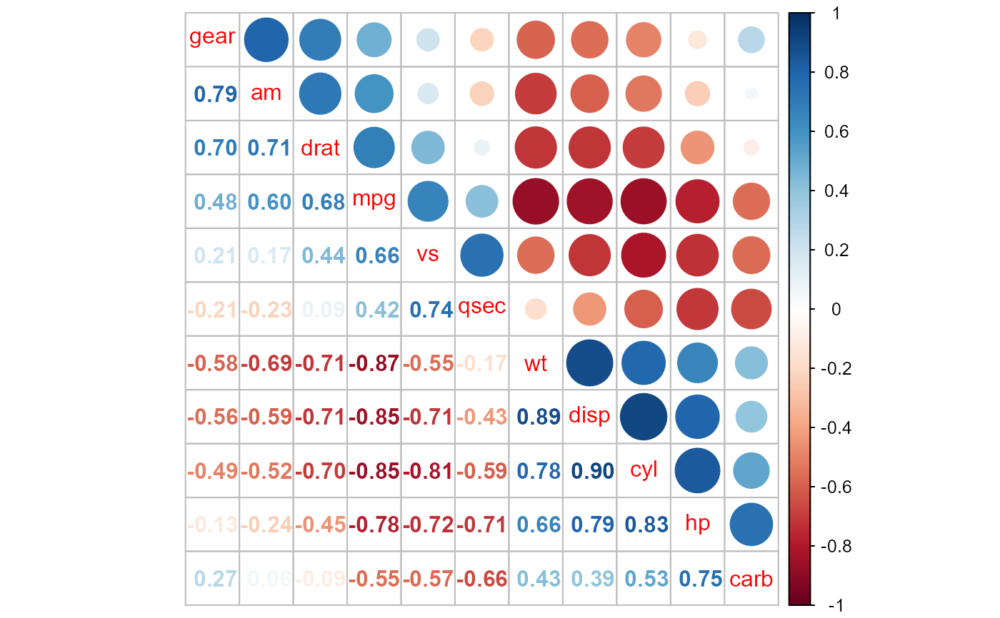
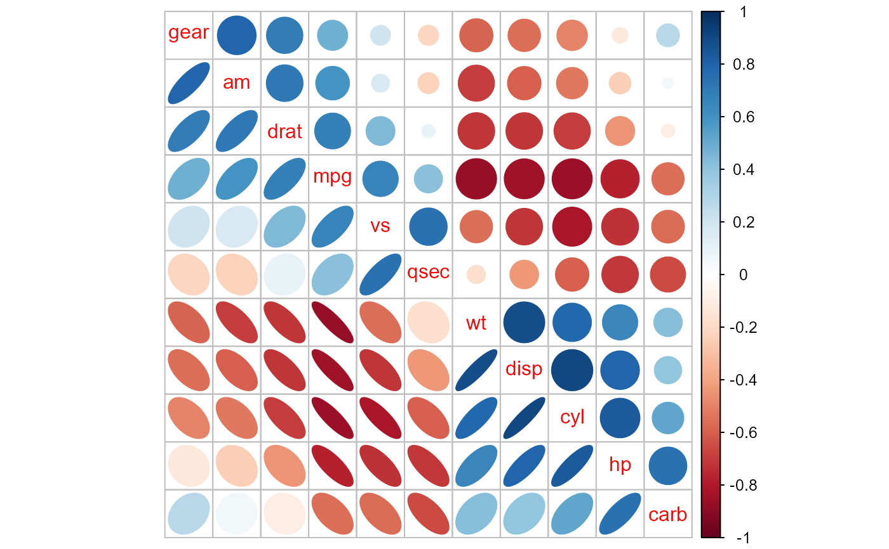
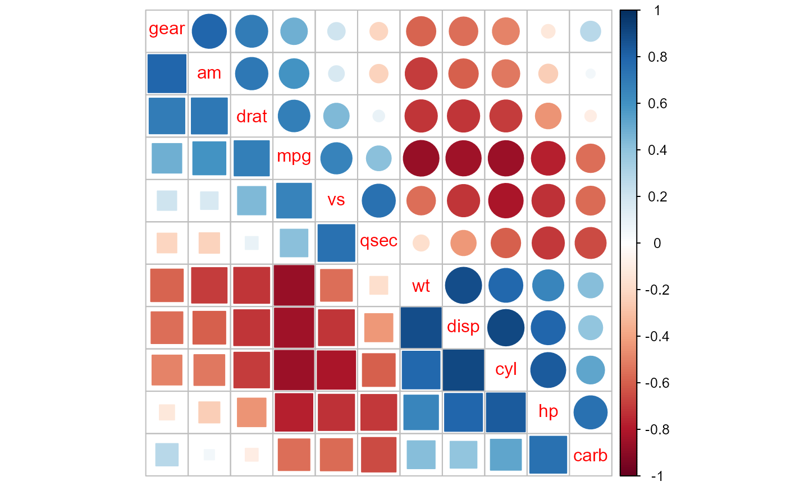
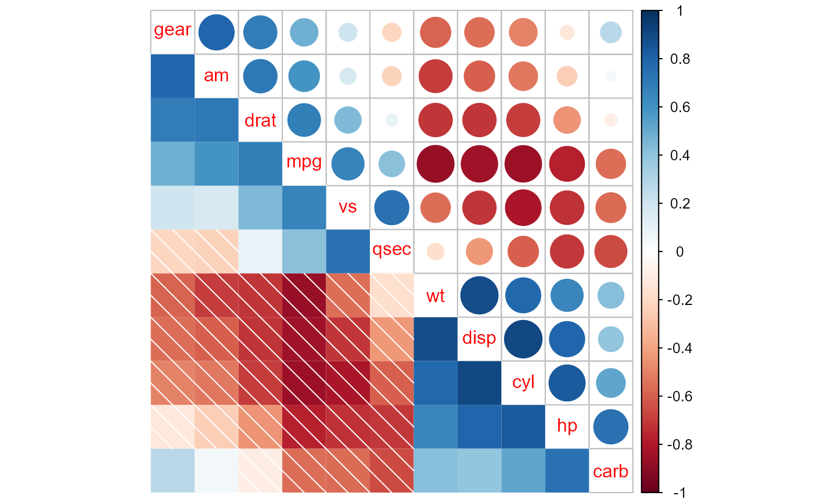
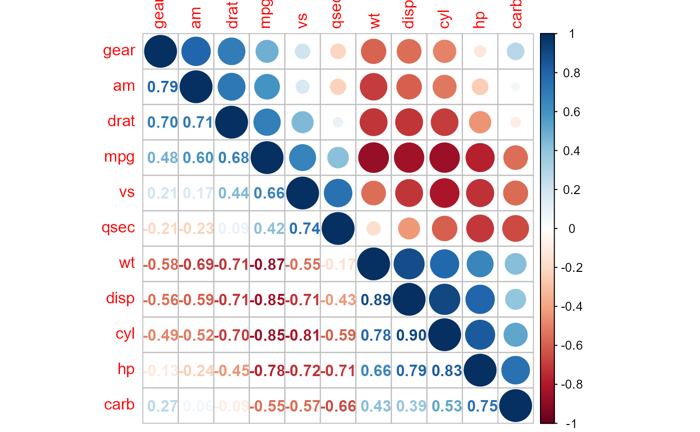
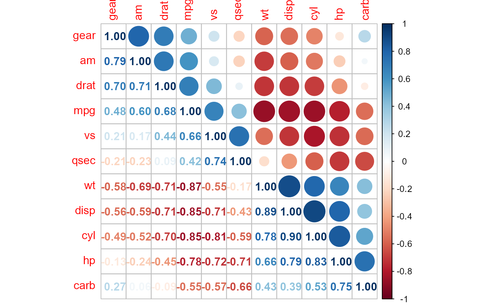
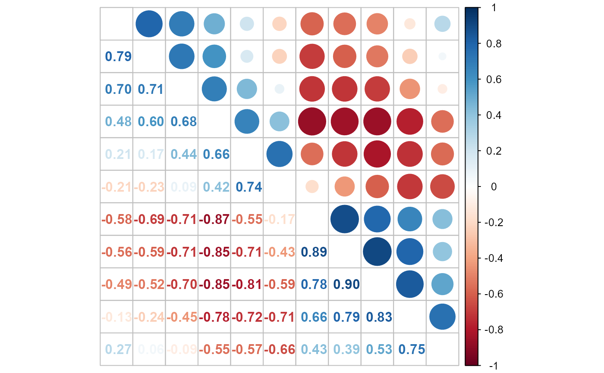
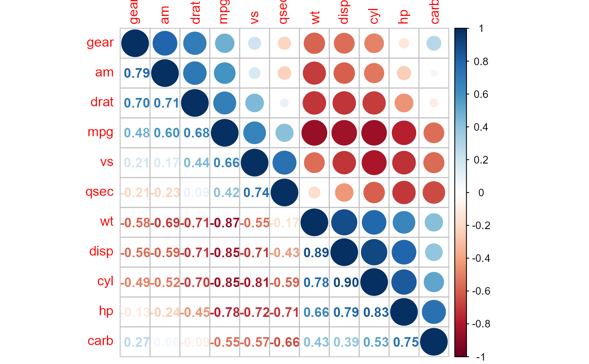
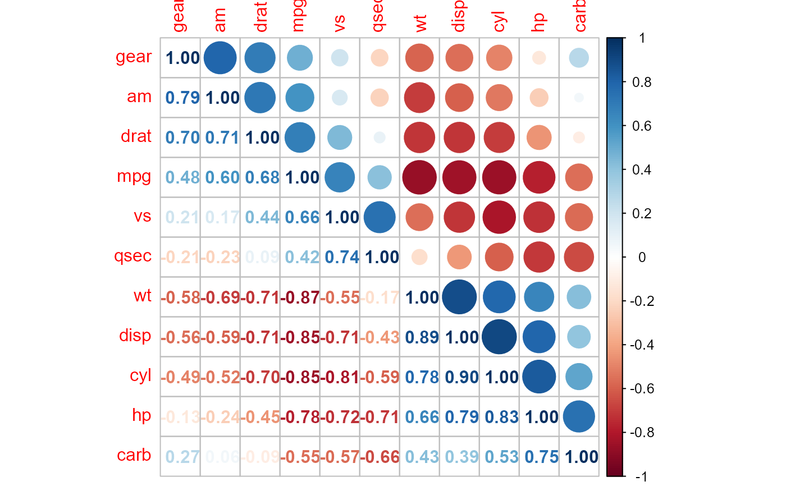
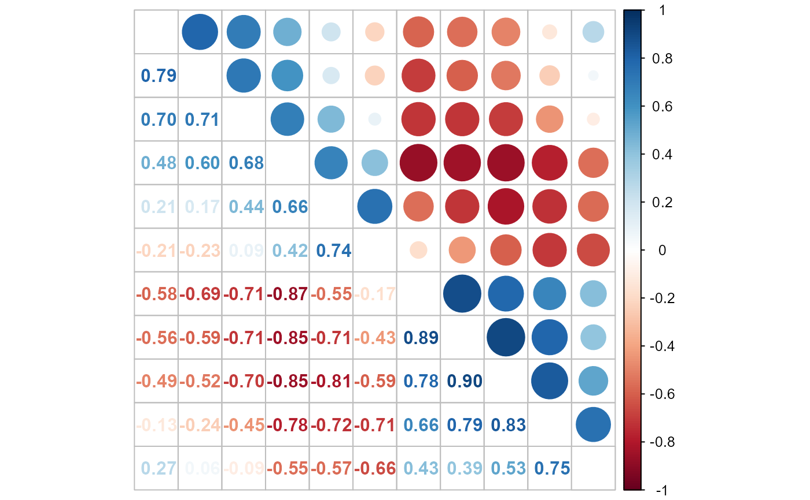

Using mixed methods to visualize a correlation matrix.
Arguments
- corr
Matrix, the correlation matrix to visualize.
- lower
Character, the visualization method for the lower triangular correlation matrix.
- upper
Character, the visualization method for the upper triangular correlation matrix.
- tl.pos
Character,
'lt','d'or'n', giving position of text labels,'lt'means left and top,'d'means diagonal. If'n', add no textlabel.- diag
Character, for specifying the glyph on the principal diagonal. It is one of
'n'(default, draw nothing),'l'(draw the glyphs of lower triangular) or'u'(draw the glyphs of upper triangular).- bg
The background color.
- addgrid.col
See the
addgrid.colparameter in the functioncorrplot- lower.col
Passed as
colparameter to the lower matrix.- upper.col
Passed as
colparameter to the upper matrix.- plotCI
See the
plotCIparameter in the functioncorrplot- mar
See
par.- ...
Additional arguments for corrplot's wrappers
Examples
M = cor(mtcars)
ord = corrMatOrder(M, order = 'AOE')
M2 = M[ord, ord]
corrplot.mixed(M2)

corrplot.mixed(M2, lower = 'ellipse', upper = 'circle')

corrplot.mixed(M2, lower = 'square', upper = 'circle')

corrplot.mixed(M2, lower = 'shade', upper = 'circle')

corrplot.mixed(M2, tl.pos = 'lt')
 corrplot.mixed(M2, tl.pos = 'lt', diag = 'u')

corrplot.mixed(M2, tl.pos = 'lt', diag = 'l')

corrplot.mixed(M2, tl.pos = 'n')

corrplot.mixed(M2, tl.pos = 'lt', diag = 'u')

corrplot.mixed(M2, tl.pos = 'lt', diag = 'l')

corrplot.mixed(M2, tl.pos = 'n')
